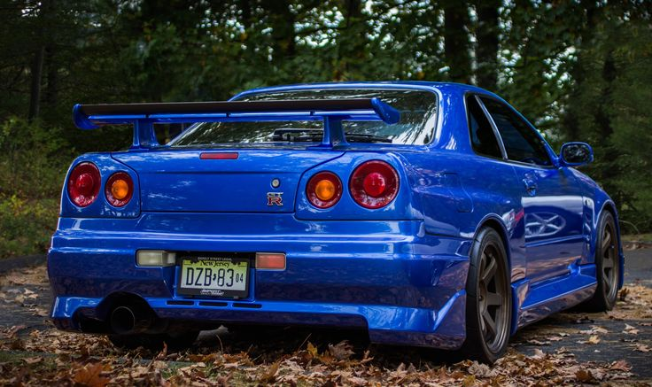

Como surgiu
O nome GT-R nasceu em 1969, aplicado ao Skyline, e logo virou sinônimo de desempenho de competição no Japão. A sigla desapareceu em 1973 e só voltou vinte anos depois, em 1989, com o Skyline GT-R R32 — carro criado para rivalizar com esportivos europeus de alto desempenho.
O R34 chegou em 1999 como a quinta geração da linhagem, apresentado como sucessor mais leve e rígido do R33. A Nissan optou por refinar uma fórmula já consagrada em vez de reinventá-la, mantendo o seis-cilindros RB26DETT e aprimorando a eletrônica e a aerodinâmica.
Em 2000, o R34 GT-R chamou atenção mundial ao completar uma volta em 7min52s no circuito de Nürburgring, reivindicando o posto de carro de produção mais rápido homologado para rua da época. A produção seguiu até 2002, quando a Nissan encerrou a linha — o R34 foi o último GT-R a levar o nome Skyline antes de a sigla virar um modelo independente, o R35, em 2007.
O azul do R34 é chamado de Bayside Blue, uma cor exclusiva criada só para esse modelo e nunca repetida oficialmente em outro Nissan.
O R34 GT-R é o último Skyline equipado com o motor RB26DETT, considerado um dos seis-cilindros mais robustos e preparáveis já criados.
Ganhou fama mundial fora do Japão ao aparecer na franquia de filmes Velozes e Furiosos, o que impulsionou o interesse por importações nos anos 2000.
Como nunca foi homologado para venda nova nos Estados Unidos, por décadas só pôde entrar no país por regras de importação para carros com mais de 25 anos.
Foram montadas cerca de 11.578 unidades do GT-R em Musashimurayama, entre a versão básica, V-Spec, V-Spec II, M-Spec e o raríssimo Nismo Z-Tune.
Motor lendário
O RB26DETT entrega centenas de cavalos extras com preparação, mantendo a reputação de ser quase indestrutível.
Tração integral inteligente
O sistema ATTESA E-TS Pro distribui o torque entre os eixos e as rodas traseiras em milissegundos, dando equilíbrio em curva.
Raridade
Produção curta, de apenas três anos, com pouco mais de 11 mil unidades no total.
Design reconhecível
As quatro lanternas traseiras redondas são uma assinatura visual da linhagem Skyline GT-R.
Legado em pista e na cultura pop
Recordes em Nürburgring somados à fama no cinema transformaram o R34 em ícone fora do automobilismo.


≈ 11.578 unidades
Produzido entre 1999 e 2002 em Musashimurayama, Japão.
O R34 fechou com chave de ouro a era do Skyline GT-R: uniu décadas de evolução mecânica a um visual reconhecível em qualquer lugar, e por isso segue como um dos carros japoneses mais desejados até hoje.